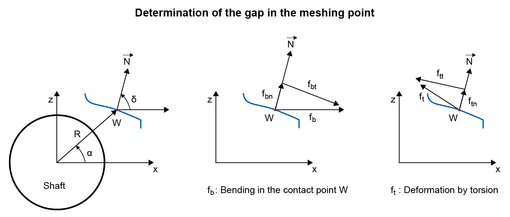

|
|
|


齿线修形
出于各种目的，了解轴截面上某一特定点因弹性变形（弯曲和扭转）而沿特定方向移动了多少非常重要。其中一个例子是计算安装在同一条轴两端的联轴器两半之间的张口量。在这种情况下，轴截面上某一点的位移是沿轴向方向计算的。
此计算最重要的应用是确定啮合区域内的轴变形。节点处的变形沿齿宽计算。在这种情况下，节点因弯曲和扭转产生的位移仅沿齿面法线方向计算。平行于齿面的位移只会引起滑动速度的极小变化，因此可以忽略不计。
在 选项卡中，您可以直接选择轴上当前存在的轮齿。根据之前输入的数据，您可以确定计算所需的规格（齿宽从…到…、啮合点坐标、节点处齿面法线方向），这些规格会显示在用户界面中。因此，假设配对齿轮具有无限刚度，就可以沿齿宽确定节点位移因变形而产生的变化过程。
注意：
计算齿线修形时，被选中用于计算的齿轮（计算 A 或 B）上可能的载荷作用点偏移会被暂时禁用。这意味着执行计算 A 时，齿轮 A 的载荷作用点偏移被禁用；执行计算 B 时，该偏移会重新启用。
这种变形（也称为张口）可以通过选择 来显示。
这会显示节点处的变形。同时还会显示最佳齿线修形的建议。这种修形可确保载荷沿齿宽均匀分布。
您可以在另一个输入字段中输入轮齿接触刚度 cγ。对于钢制齿轮，每 mm 齿宽的轮齿接触刚度约为 20 N/mm/°。cγ 的值在圆柱齿轮计算中会精确计算并记录。然后可以使用该刚度计算沿齿宽的载荷分布。单击 查看结果。
计算齿轮计算中的载荷分布系数 KHβ
结果窗口还会显示载荷分布系数 KHβ，它根据 ISO 6336 计算，公式为 KHβ = wmax/wm，由平均线载荷 (wm) 和最大线载荷 (wmax) 得出。该计算使齿向载荷分布系数的估算精度显著提高，类似于 ISO 6336 中的方法 B。该过程与 ISO 6336 的附录 E 基本相似。但是，您必须注意，此处所用配对齿轮的轴被假设为具有无限刚度。如果配对齿轮的轴刚度大得多，这是允许的。制造偏差也仅在例如通过将轴的角偏差（轴承偏移）作为轴数据的一部分输入来定义时才会纳入。
齿轮本体也可以作为刚度矩阵纳入考虑。为此，请在圆柱齿轮力元素中选择 选项来执行相应的计算（参见"力"章）。
注意：
如果要在考虑两根轴的变形的情况下确定 Khβ：两根轴的变形分量可以在圆柱齿轮计算的 选项卡中合并。
确定齿线修形尺寸
此计算模块旨在让您能够快速而准确地定义最佳的齿线修形。为此，您可以输入由齿线鼓形或齿端修形以及齿向角偏差组成的修形。根据所需的走向，您可以将齿向角偏差指定为正数或负数。此处输入的修形随后也会显示在“变形”图形中。在“载荷分布”图形中，您可以清楚地看到此计算所实现的改进的载荷分布。单击 以调用用于制造该修形（齿轮图纸）的图形。

图 26.9：确定啮合点处的张口
Flank line modification
For various purposes, it is important that you know how much a specific point in the shaft cross section moves in a particular direction due to elastic deformation (bending and torsion). An example of this is calculating the gaping between the two halves of a coupling that are mounted on each end of the same shaft. In this situation, the displacement of a point on the shaft cross section is calculated in the axial direction.
The most important application of this calculation is to determine shaft deformation in the meshing area. The deformation for the pitch point is calculated along the facewidth. In this situation, the displacement of the pitch point due to bending and torsion is calculated only in the direction of the normal to the flank. A displacement parallel to the flank only results in a very minimal change in sliding velocity and can therefore be ignored.
In the tab, you can directly select the toothing currently present on the shaft. Based on previously entered data, you can determine the necessary specifications for the calculation (facewidth from and to, coordinates of meshing point, direction of the normal to the tooth flank in the pitch point) which are displayed in the user interface. Therefore, assuming that the counter gear has infinite stiffness, the progress of the pitch point displacement due to deformation can be determined along the facewidth.
Note:
When calculating the flank line modification, a possible offset of the load application on the gear selected for the calculation (calculation A or B) is temporarily disabled. This means the gear load application offset of gear A is disabled when calculation A is performed, but is re-enabled when calculation B is performed.
This deformation, also known as gaping, can be displayed by selecting .
This shows the deformation in the pitch point. A proposal for an optimal flank line modification is also displayed. This type of modification would ensure a homogenous load distribution across the facewidth.
You can input the tooth contact stiffness cγ in another input field. For steel gears, the tooth contact stiffness per mm facewidth is approximately 20 N/mm/°. The values of cγ are calculated precisely and documented in the cylindrical gear calculation. This stiffness can then be used to calculate the load distribution along the facewidth. Click to see the result.
Calculating the load distribution coefficient KHβ for gear calculation
The results window also shows the load distribution coefficient KHβ, calculated according to ISO 6336, with the equation KHβ = wmax/wm from the average line load (wm) and the maximum line load (wmax). This calculation enables the face load factor to be estimated with significantly more accuracy, similar to Method B in ISO 6336. The procedure is basically similar to Annex E of ISO 6336. However, you must be aware that the shaft of the counter gear used here is assumed to have infinite stiffness. This is permitted if the shaft of the counter gear has much greater stiffness. Manufacturing deviations are also only included if, for example, they have been defined by inputting an angular deviation of the shaft (bearing offset) as part of the shaft data.
The gear body can also be taken into account as a stiffness matrix. To do this, select the option in the cylindrical gear force element to perform the corresponding calculation (see chapter Forces).
Note:
If Khβ is to be determined while taking into account the deformation of the two shafts: The deformation components of two shafts can be combined in the cylindrical gear calculation in the tab.
Sizing the flank line modification
This calculation module has been designed to enable you to define the best possible flank line modification both quickly and accurately. To do this, you can input a modification consisting of flank line crowning or end relief and flank angle deviation. You can specify the flank angle deviation either as a positive or negative number, depending on the required progression. The modification input here is then also displayed in the "Deformation" graphic. In the "Load distribution" graphic you can then clearly see the improved load distribution achieved by this calculation. Click to call the graphic for manufacturing the modification (gear drawing).
Figure 26.9: Determining gaping in the meshing point